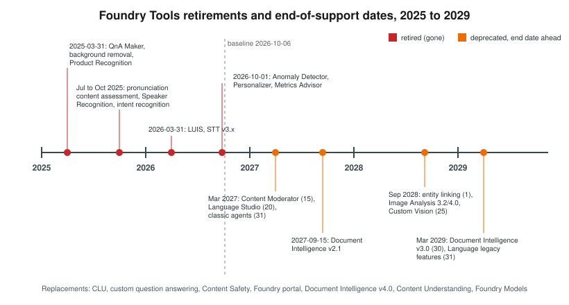

Immersive Reader, Video Indexer and Retired Services
|
This content was generated with the assistance of AI and should be verified against the official documentation before being relied on in production. |
This page targets Azure CLI 2.90.0, the Immersive Reader JavaScript SDK (@microsoft/immersive-reader-sdk), and
azure-identity 1.26.0 / Azure.Identity 1.21.0 for the token service, checked on 2026-10-06. Retirement dates come
from the official notices linked in the table and were re-checked on 2026-10-06 where the notice was reachable.
Immersive Reader
Azure AI Immersive Reader is an embeddable reading experience. Your web page launches it in a full-screen iframe with the text to read, and it offers:
-
read aloud with word highlighting, in many voices and speeds
-
translation of the whole text or single words into 100+ languages
-
parts of speech coloring (nouns, verbs, adjectives) and syllable splitting
-
a picture dictionary for single words
-
line focus, text spacing and theme options that help readers with dyslexia
Immersive Reader needs its own single-service resource (--kind ImmersiveReader) with a custom subdomain and Entra
ID authentication. Your backend gets a token for the scope https://cognitiveservices.azure.com/.default and hands it
to the page, together with the subdomain; the page never sees a secret.
Token flow
# catalog-api endpoint: GET /immersive-reader/token
from azure.identity import DefaultAzureCredential
credential = DefaultAzureCredential()
def immersive_reader_token():
token = credential.get_token("https://cognitiveservices.azure.com/.default")
return {"token": token.token, "subdomain": "reader-bookshelf"}using Azure.Core;
using Azure.Identity;
app.MapGet("/immersive-reader/token", async () =>
{
AccessToken token = await new DefaultAzureCredential().GetTokenAsync(
new TokenRequestContext(new[] { "https://cognitiveservices.azure.com/.default" }));
return Results.Ok(new { token = token.Token, subdomain = "reader-bookshelf" });
});Source: Immersive Reader quickstart (C#)
The page launches the reader with the SDK:
import { launchAsync } from "@microsoft/immersive-reader-sdk";
const { token, subdomain } = await (await fetch("/immersive-reader/token")).json();
const content = {
title: "Sample chapter: The Lighthouse Keeper",
chunks: [{ content: document.querySelector("#sample-chapter").innerText, lang: "en", mimeType: "text/plain" }],
};
await launchAsync(token, subdomain, content, { uiZIndex: 2000 });Source: Immersive Reader SDK reference
Testing the token endpoint with curl:
curl -s https://catalog.bookshelf.example/immersive-reader/token | jq '{subdomain, token: (.token | .[0:16])}'Provisioning
In the Azure portal
-
Create a resource of type Immersive Reader named
reader-bookshelfinrg-bookshelf, with custom subdomainreader-bookshelf. -
On its Access control (IAM) blade, assign
Cognitive Services Immersive Reader Usertoid-catalog-api.
With the Azure CLI
az cognitiveservices account create \
--name reader-bookshelf --resource-group "$RG" --location "$LOCATION" \
--kind ImmersiveReader --sku S0 --custom-domain reader-bookshelf --yes
az role assignment create \
--assignee "$(az identity show --name id-catalog-api --resource-group "$RG" --query principalId -o tsv)" \
--role "Cognitive Services Immersive Reader User" \
--scope "$(az cognitiveservices account show --name reader-bookshelf --resource-group "$RG" --query id -o tsv)"Use cases
| Scenario | Feature | Why this feature | Example input → output |
|---|---|---|---|
Bookshelf: sample chapters |
Read aloud, translation, line focus |
Readers try a chapter in their own way before buying. |
Sample chapter → reader with highlighting and Spanish translation |
Education |
Parts of speech, syllables, picture dictionary |
Early readers and language learners. |
Lesson text → colored parts of speech |
Accessibility |
Read aloud, text spacing, themes |
Low-vision and dyslexic readers. |
Article → high-contrast spaced view with audio |
Dyslexia support |
Line focus, syllables |
Reduces visual crowding. |
Homework text → one line at a time |
When not to use it
-
When you only need audio, call text to speech directly (Text to Speech and Avatars).
-
When the reading UI must be fully custom, build it with text to speech and Translator; Immersive Reader’s UI is fixed. See Choosing a Foundry Tool (or a Foundry Model).
Azure AI Video Indexer
Azure AI Video Indexer analyzes video and audio (transcripts, faces, labels, topics, scenes, brands) with its own portal, widgets and API. It is a separate service built on Azure AI capabilities, not part of the Foundry Tools catalog.
-
Choose Video Indexer for a media library with a ready-made portal, embeddable player widgets and media-specific insights.
-
Choose Content Understanding video analyzers (Content Understanding: Multimodal Analyzers) when you want your own fields, chapters and summaries as JSON inside a pipeline, next to document and audio analyzers.
Source: What is Azure AI Video Indexer?
Retired and deprecated services

Retired features are listed only here and in short migration notes on the tool pages. Deprecated-but-supported features carry a warning on their own page.
| Item | Status | Date | Replacement | Notice |
|---|---|---|---|---|
QnA Maker |
Retired |
2025-03-31 |
Custom question answering |
|
Background removal, Product Recognition, Image Analysis model customization |
Retired |
2025-03-31 |
None |
|
Pronunciation content assessment |
Retired |
July 2025 |
Azure OpenAI (Foundry Models) |
|
Speaker Recognition |
Retired |
2025-09-30 (Speech SDK 1.47) |
None; diarization is unaffected |
|
Speech intent recognition |
Retired |
October 2025 (Speech SDK 1.47) |
CLU or an LLM |
|
Spatial Analysis, Video Retrieval |
Retired |
2025 |
Content Understanding (+ AI Search) |
|
ConversationTranslator (multi-device) |
Removed |
Speech SDK 1.51 |
Speech translation, Live Interpreter |
|
LUIS |
Retired |
2026-03-31 |
CLU |
|
Speech to text REST v3.0 and v3.2 previews |
Retired |
2026-03-31 |
REST |
|
Anomaly Detector |
Retired |
2026-10-01 |
Fabric anomaly detection |
|
Personalizer |
Retired |
2026-10-01 |
|
|
Metrics Advisor |
Retired |
2026-10-01 |
None |
|
Translator v3 BreakSentence, Detect, Dictionary |
Not in |
— |
Language detection; adaptive custom translation |
|
Content Moderator |
Deprecated |
Retires 2027-03-15 |
Content Safety |
|
Language Studio |
Deprecated |
Retires 2027-03-20 |
Foundry portal |
|
Foundry classic agents |
Deprecated |
Retire 2027-03-31 |
New Foundry agents |
|
Document Intelligence v2.1 |
End of support |
2027-09-15 |
v4.0 |
|
Entity linking |
Deprecated |
End of support 2028-09-01 |
Language NER or Foundry Models |
|
Image Analysis 3.2 / 4.0, multimodal embeddings |
Deprecated |
Retire 2028-09-25 |
Document Intelligence Read, Face, Content Understanding, Foundry Models |
|
Custom Vision |
Deprecated |
Retires 2028-09-25 |
AutoML, Foundry Models, Content Understanding classifier |
|
Document Intelligence v3.0 |
End of support |
2029-03-30 |
v4.0 |
|
Language legacy features (sentiment, key phrases, summarization, CLU, CQA, custom text classification, orchestration) |
Deprecated |
End of support 2029-03-31 |
Foundry Models |
The Personalizer date follows the official Azure update (2026-10-01). Some Learn pages showed an earlier date (2026-08-25); either way the service is retired as of this page’s baseline date.
Related pages
-
Text to Speech and Avatars covers the voices behind read-aloud.
-
Content Understanding: Multimodal Analyzers covers video analyzers.
-
Language: Sentiment, Summarization, CLU and Question Answering covers the Language legacy features and the LUIS and QnA Maker migrations.
-
Vision: Image Analysis and OCR covers the Image Analysis and Custom Vision retirements.